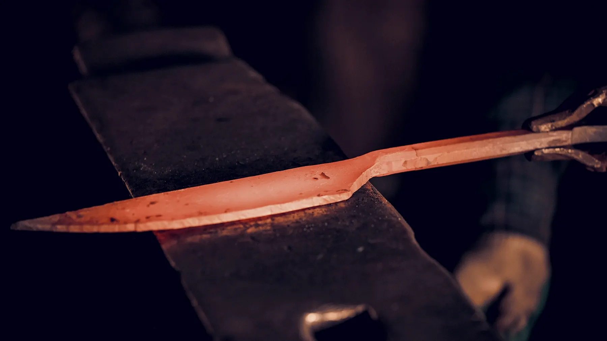

The Fulling Mill, Cleave Ford
Two bays and a river.
The mill stopped fulling cloth in 1911 and stood empty for most of a century. We took the two downstream bays in 2009 because the leat was intact and the main shaft still turned, which meant a trip hammer could be put back on it for the price of a bearing and a winter.
The rest is unremarkable and deliberately so: a side-blast coal forge, a 112 kg anvil on an elm stump, a grinder, a heat-treating oven with a calibrated thermocouple, an oil tank, a water tank, and a bench under the north window where everything slow happens.
Stone floors, because a dropped blade should chip the floor and not the other way round.
- Bays
- Two, 42 m²
- Trip hammer
- Water, on the mill shaft
- Anvil
- 112 kg, London pattern
- Forge
- Side blast, coal
- Oven
- ±5 °C, calibrated yearly
- People
- Two
- Since
- 2009
Who does what
Two people, one blade at a time.
Ren Alder does everything hot: the welding, the forging, the normalising and the quench. Trained at a farrier's, which is an unfashionable place to learn and the reason nothing here cracks from being rushed.
Ida Kell does everything cold: the grinding, the stones, the etch, the handles and the letters we write back. The bench under the window is hers and the shop is quiet when she is on it.
Neither of us does the other's half. It is a small shop and that is exactly why the division matters — a blade that has been hardened and then polished by the same tired person at ten at night is a blade with an optimistic opinion of itself.

Worth knowing before you buy from anyone
How to tell a hamon from a picture of one.
A lot of blades sold with a “hamon” do not have one. The line has been wiped on in acid resist and etched, or sandblasted, or printed. It is not always dishonest — some makers say plainly that it is decorative — but you should be able to check, and you can.
A real line has depth. Tilt the blade under a single light. A hardened boundary changes how the steel reflects, so the line moves as the angle moves and there is structure above it — cloudy, uneven, with flecks. A drawn line sits flat on the surface and stays exactly where it is.
A real line is untidy. Clay does not produce a neat repeating scallop. If every wave is identical, it was applied by something that repeats.
A real line survives. Ask what happens if it is polished. An etched line comes off on a stone in a minute. A quench line comes back, because it is the steel and not a finish on it.
- Steel type
- Shallow-hardening only
- Stainless
- Cannot hold a hamon
- Tilt test
- Line should move with the light
- Repetition
- Identical waves → applied
- Polish test
- It should come back
- Our rate
- 1 in 9 cracks in the tank
We can tell you what it will weigh. We cannot tell you what the line will look like.Ida Kell · bench
After it arrives
Carbon steel asks for one habit.
Wipe it and put it away dry. That is the whole of it. Not the drying rack, not the sink, not tomorrow — dry, now, and back on the magnet or in the saya.
It will change colour. Onions, tomatoes and stock will pull the steel through straw, grey and eventually a settled blue-black patina that protects it. That is the blade working, not the blade failing. The only thing to act on is orange: rust is orange, and orange comes off with a cork and a little scouring powder before it pits.
Send it back whenever the edge stops feeling right. Resharpening is free for anything we made; you pay the postage home.
- After use
- Wipe dry immediately
- Dishwasher
- Never
- Storage
- Magnet, saya or block
- Patina
- Expected, leave it
- Rust
- Cork and scouring powder
- Stones
- 1000, then 3000
- Resharpening
- Free, for life
Visiting
Fridays, if you write first.
The shop is open to visitors on Fridays between ten and four, by arrangement. There is nothing to buy in the room — everything made here is already spoken for — but you can hold the four shapes, see a blade in the tank if the timing falls right, and look at a line under a real light instead of a photograph.
Come in closed shoes. The floor is stone and the scale is sharp.